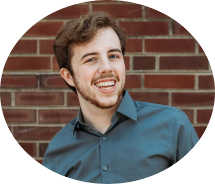

About
Russell Zillman is a Senior at Illinois State University pursuing a double major in Music Business and Creative Technologies. During his time at Illinois State, Russell found a degree path that happily married his love for music and technology with the Creative Technologies program. Russell has had the opportunity to study DAWs such as VCV Rack, web design languages such as HTML, CSS, and JavaScript, alongside music business and economics classes in hopes to round out his education. Russell plans to take classes on Java, Unity, the DAW Ableton Live, as well as many more topics in order to widen his skillsket and knowledgebase. Russell also participated in an extra-curricular a cappella group known as the "Clef Hangers" where he served as the music director and president. After college, Russell plans to pursue a job in the tech sector with hopes of still being able to tap into his creative side. Russell is from Danville, Illinois, but currentvly lives in Urbana, with his girlfriend when he is not at school in Normal. He has an immense love of American football, video games, and drama television.